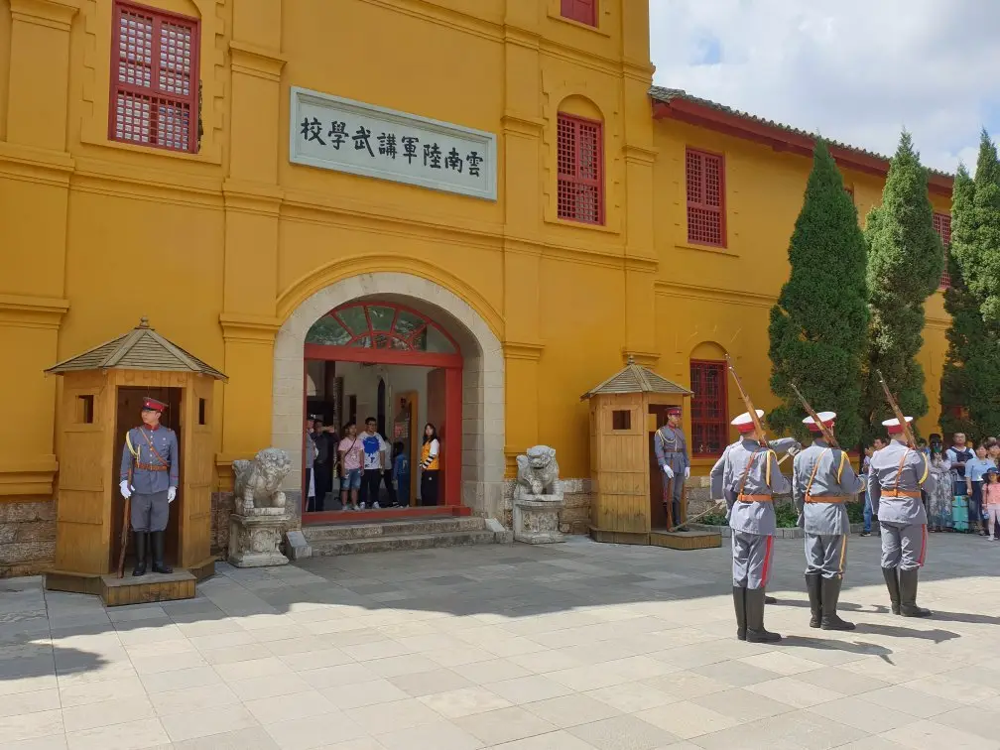

Top 3 Historic Sites in Kunming
Yunnan Military Academy (Yunnan Junxiao)

Introduction
Yunnan Military Academy, in downtown Kunming, is a historic institution founded in 1909—one of China’s earliest modern military academies, training thousands of soldiers and leaders (including revolutionary figures like Zhu De and Ye Jianying). The site covers 70,000 square meters, with well-preserved buildings: the “Main Teaching Building” (with old classrooms and blackboards), the “Dormitory Area” (showing how cadets lived), and the “Exhibition Hall” (displaying old photos, uniforms, and weapons). The campus has a solemn, educational atmosphere—you can walk through the same halls where future leaders studied, and read inscriptions about the academy’s role in China’s 20th-century history. It’s a must-visit for history fans interested in modern Chinese military and revolutionary history.
Best Time to Visit
Morning (10:00 AM–12:00 PM): Quiet; good for reading exhibition labels and avoiding crowds.
Year-round: Indoor-outdoor layout; comfortable in all seasons (avoid rainy afternoons).
Price
Entry Fee: Free (requires ID registration at the entrance).
Audio Guide: 15 CNY/rental (available in Chinese and English, explains key buildings and history).
Golden Temple (Jindian Temple)
Introduction
Golden Temple, 8 kilometers northeast of downtown Kunming, is China’s largest and best-preserved bronze temple—built in the Ming Dynasty (1602) and reconstructed in the Qing Dynasty. The main hall (3.5 meters tall, 25 tons) is entirely made of bronze, with intricate carvings of dragons, phoenixes, and Buddhist symbols on its roof and walls. Surrounded by pine forests and bamboo groves, the temple is part of Yuquan Mountain Scenic Area, which also includes a “Bronze Culture Museum” (displaying other ancient bronze artifacts) and a “Peony Garden” (blooming April–May). You can climb the stone steps to the temple, admire the bronze architecture, and burn incense at the Buddhist altar. The temple’s peaceful setting and unique bronze structure make it a standout historic site in Kunming.
Best Time to Visit
Spring (April–May): Peony Garden is in bloom; mild weather (15°C–22°C).
Morning (9:00 AM–11:00 AM): Less crowded; sunlight shines on the bronze hall, making it glow.
Price
Entry Fee (Golden Temple + Yuquan Mountain): 30 CNY/adult; 15 CNY/students; free for kids under 1.2m.
Bronze Culture Museum: Included in the entry fee.
Incense for Worship: 5–10 CNY/bundle (available near the temple entrance).
Cuihu Park (Green Lake Park)

Introduction
Cuihu Park, in downtown Kunming, is a 21-hectare historic lake park with a history dating back to the Tang Dynasty (618–907 AD). It’s known for its calm lake (surrounded by willow trees), old teahouses, and cultural relics—including the “Wen Temple” (a former Confucian school) and “Yunnan University Old Gate” (adjacent to the park). The park was a gathering place for scholars and artists in ancient times, and today it’s a favorite spot for locals to practice tai chi, play chess, or relax with a cup of tea. In winter (November–February), red-billed seagulls also visit the lake, adding to its charm. You can rent a paddle boat (40 CNY/hour) on the lake, sit in a teahouse (20–40 CNY/person) to enjoy lake views, or walk along the willow-lined paths to admire the park’s historic buildings.
Best Time to Visit
Winter (November–February): Seagulls on the lake; cool (10°C–18°C) and quiet.
Afternoon (2:00 PM–4:00 PM): Perfect for sitting in a teahouse or watching locals’ daily activities.
Price
Entry Fee: Free (the park is open to the public).
Paddle Boat Rental: 40 CNY/hour (2-person boat); 60 CNY/hour (4-person boat).
Teahouse Visit: 20–40 CNY/person (includes a cup of Yunnan black tea and lake views).